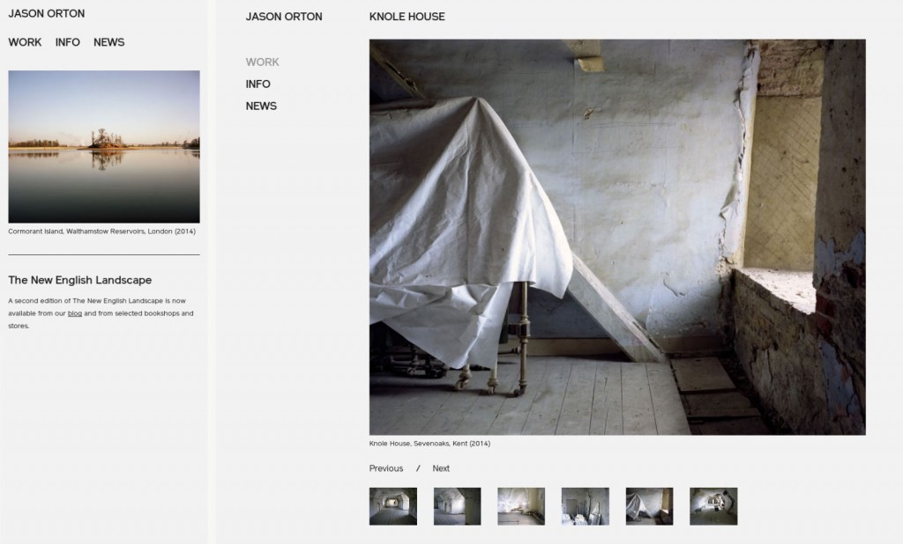

The photographer Jason Orton, last mentioned here in connection with the book The New English Landscape which carries his images, text by Ken Worpole and was designed by co-op member Peter Brawne, now has a new website. This was created by fellow member Ben Edmonds of We Sort.

Functioning largely as a portfolio of photos, the site appearance changes depending which sort of device — desk- or lap-top computer, tablet or mobile phone — it is viewed on. While fulfilling this need for a mutable appearance, Ben also achieved the aim of having a simple, pared-back look ensuring the viewer focuses on the photography.
View Jason’s site here: jasonorton.com